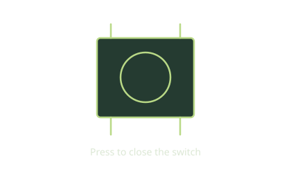
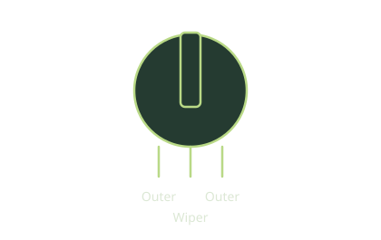
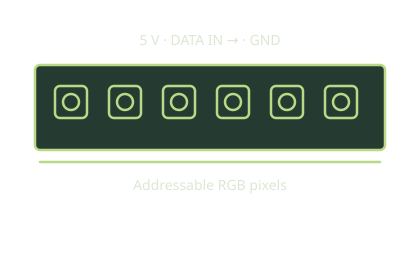
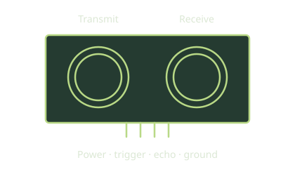
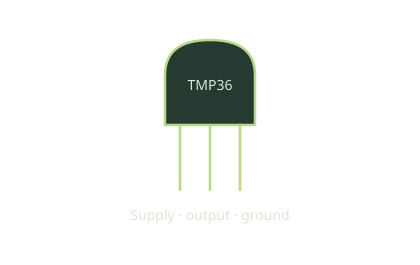
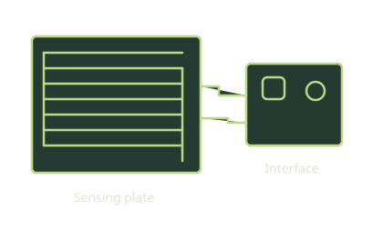
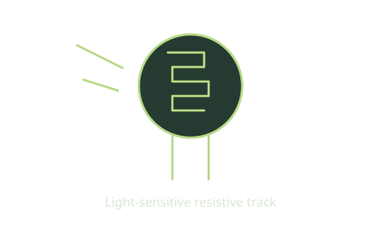
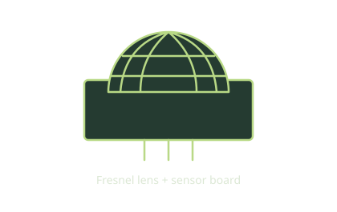
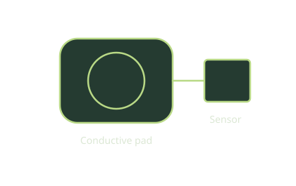
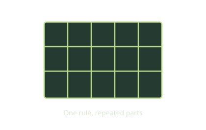

● Digital designer & maker · Roskilde, Denmark
Making digital
ideas tangible.
A collection of my projects, experiments, and things I’ve learned about design and technology. Explore the work, play with the code, and try making something yourself.
↓01 / Selected work
From screen to physical world.
Experiments in light, material, and interaction.


02 / Learn by making
A little less looking.
A little more trying.
Small tools for learning code: change a value, see what happens, and understand why. Start with a strip of NeoPixels.
Pixel numbers start at 0. Select one to control it.
Meet the component

RGB NeoPixel strip
Each pixel contains a red, green and blue LED plus its own controller. One data connection addresses the whole strip.
Simplified illustration. Use the wiring notes for connections.Arduino · NeoPixel basics
Your first line of light.
Choose a colour and a pixel, then press Send to LEDs. Like a real NeoPixel strip, changing the colour in code does nothing until you call show().
Ready to send.
What does each part do?
begin()prepares the strip.clear()clears the stored colours.setPixelColor()stores a pixel’s red, green and blue values (0–255).- A
forloop repeats the instruction for all eight pixels. show()sends the stored colours to the LEDs.
This example scales RGB values for brightness. The full sketch sets the strip once in setup(); loop() can stay empty.
Try it on real hardware
Example setup: an Arduino Uno and eight 5 V RGB NeoPixels (GRB, 800 kHz), with data on pin 6. Install Adafruit NeoPixel using the Arduino Library Manager, then copy the sketch. Adjust the pin, pixel count and pixel type to match your hardware.
Connect data to the strip’s DIN, share ground with the board, and use a suitable 5 V supply. Follow Adafruit’s wiring and power guidance, including a 300–500 Ω data resistor and a 500–1000 µF capacitor across the strip’s power input. Disconnect power before changing wiring.
Wiring guide ↗ · Library explanation ↗Browser simulation, not a connection to physical LEDs. Screen colour and brightness are approximate.
Meet the component

Momentary pushbutton
A tactile switch closes a connection while held. Use a pair of contacts that connect only when pressed.
Simplified illustration. Use the wiring notes for connections.Digital input
One button. Two states.
Hold the button with your mouse, touch, or the Space key. The LED stays on while you press, then turns off when you release.
Wire it and understand it
Connect a pushbutton between pin 2 and GND. Use contacts that connect only when pressed. This sketch uses the Uno’s built-in LED, so no external LED is needed.
INPUT_PULLUP keeps the pin HIGH when released. Pressing connects it to ground, so LOW means pressed. This is a held-state example; counting presses or toggling needs debouncing.
Browser simulation. The sketch targets an Arduino Uno; no hardware is connected to this page.
Meet the component

10 kΩ rotary potentiometer
Turning the shaft moves a wiper across a resistive track. The centre terminal supplies the changing voltage.
Simplified illustration. Use the wiring notes for connections.Analog input
Read a dial. Dim a light.
A potentiometer gives you a range of values. Move the slider to see an analog reading become an LED brightness level.
Wire it and understand it
For a 10 kΩ potentiometer on an Arduino Uno, connect the outer terminals to 5 V and GND, and the centre terminal (wiper) to A0. Connect pin 9 → 220 Ω resistor → LED anode, and the LED cathode to GND.
analogRead() returns 0–1023 on this board. map() scales it to 0–255 for analogWrite(), which controls PWM on pin 9. This is a regular LED, not a NeoPixel. Other boards can use different voltages and resolutions.
Browser simulation. The sketch targets an Arduino Uno; no hardware is connected to this page.
Paused · pixel 0 lit
Meet the component

RGB NeoPixel strip
The same strip as the basics lesson. The chase moves the active pixel along the strip, one address at a time.
Simplified illustration. Use the wiring notes for connections.Loops & timing
Make the light move.
A chase lights one pixel at a time. Run it, pause it, or step through each frame to follow the position in the code.
Starts paused. Switching tabs pauses the animation.
Wire it and understand it
Use the same eight RGB NeoPixels and pin 6 setup as NeoPixel basics, including its power and wiring guidance. Install the Adafruit NeoPixel library.
millis() checks elapsed time without blocking the loop. clear() removes the previous pixel; show() sends the new frame. (position + 1) % PIXEL_COUNT wraps pixel 7 back to 0. The RGB values are scaled to 20% brightness.
Browser simulation. The sketch targets an Arduino Uno; no hardware is connected to this page.
Meet the component

HC-SR04 ultrasonic module
One transducer sends a sound pulse; the other receives the echo. The time between them gives the distance.
Simplified illustration. Use the wiring notes for connections.Sensor playground · Distance
Move an object. Read the distance.
Move your mouse across the scene, or drag on touch. The object’s horizontal position controls the simulated distance. The slider works with a keyboard too.
Wiring & what the reading means
Connect VCC to 5 V, GND to GND, TRIG to pin 7, and ECHO to pin 8 on an Arduino Uno. The echo is 5 V; use level shifting for a 3.3 V board. A timeout means no echo, not zero distance.
Run this sketch on its own. Open Serial Monitor at 9600 baud to see the readings.
Read the reference ↗Illustrative browser simulation for an Arduino Uno, not a live sensor. Real readings vary with hardware and calibration.
Meet the component

TMP36 temperature sensor
This small three-lead package outputs a voltage that changes with temperature. Check the package orientation before wiring.
Simplified illustration. Use the wiring notes for connections.Sensor playground · Temperature
Turn heat into a number.
Change the temperature and watch the thermometer and simulated sensor voltage respond. The code converts an analog reading back to degrees Celsius.
Wiring & what the reading means
TMP36: connect +Vs to 5 V, Vout to A0, and GND to GND. Check the package pinout before wiring. This example assumes the Uno’s default 5 V analog reference. It is not the conversion formula for a thermistor or DHT sensor.
Run this sketch on its own. Open Serial Monitor at 9600 baud to see the readings.
Read the reference ↗Illustrative browser simulation for an Arduino Uno, not a live sensor. Real readings vary with hardware and calibration.
Meet the component

Rain plate + interface module
Water bridges the exposed tracks on the plate. The interface module turns the changing resistance into a reading.
Simplified illustration. Use the wiring notes for connections.Sensor playground · Rain
Make it rain.
Increase the simulated plate wetness to add droplets. Once the raw reading crosses the threshold, the built-in LED signals a wet plate.
Wiring & what the reading means
Use a rain module rated for 5 V: VCC to 5 V, GND to GND, AO to A0. Keep the module electronics dry. This example assumes a lower reading when wet. Measure your dry and wet readings, then calibrate the threshold; this is not rainfall in millimetres.
Run this sketch on its own. Open Serial Monitor at 9600 baud to see the readings.
Read the reference ↗Illustrative browser simulation for an Arduino Uno, not a live sensor. Real readings vary with hardware and calibration.
Meet the component

Photoresistor (LDR)
The resistance changes with light. Combine it with a fixed resistor to make a voltage divider for an analog input.
Simplified illustration. Use the wiring notes for connections.Sensor playground · Light
Let the room get darker.
Adjust the ambient light. A simple threshold turns the built-in LED on when the simulated room is dark.
Wiring & what the reading means
Make a voltage divider: 5 V → photoresistor → A0 → 10 kΩ resistor → GND. With this arrangement, a higher reading means more light. Calibrate the threshold in your room. This relative reading is not a lux measurement.
Run this sketch on its own. Open Serial Monitor at 9600 baud to see the readings.
Read the reference ↗Illustrative browser simulation for an Arduino Uno, not a live sensor. Real readings vary with hardware and calibration.
Meet the component

PIR motion module
The faceted lens focuses infrared onto the sensing element. The module signals changes caused by movement.
Simplified illustration. Use the wiring notes for connections.Sensor playground · Motion
Move through the sensing area.
Move the pointer across the scene or drag on touch to simulate motion. The signal stays high for two seconds after the last movement. A button provides the same interaction with a keyboard.
Wiring & what the reading means
For a compatible PIR module, connect VCC to its rated supply, GND to GND, and OUT to Uno pin 2. Check its pin labels. Real PIRs detect changes in infrared, need warm-up time, and have model-specific hold and retrigger settings.
Run this sketch on its own. Open Serial Monitor at 9600 baud to see the readings.
Read the reference ↗Illustrative browser simulation for an Arduino Uno, not a live sensor. Real readings vary with hardware and calibration.
Resting · tap the jellyfish to activate
Meet the component

Capacitive touch electrode
A conductive surface can act as a touch input when connected to a suitable sensing circuit. This is a possible input, not the installation’s documented hardware.
Simplified illustration. Use the wiring notes for connections.Interaction design
Make the response feel right.
A small action should produce clear feedback. Tap the jellyfish, then adjust its glow to see how an input becomes an experience.
const touched = false;
const brightness = touched ? 0.75 : 0.15;
light.style.opacity = brightness;
A browser illustration inspired by the installation; not its original hardware code.
How could a touch become an input?
A capacitive sensor can detect a change in its electric field. Software can translate that reading into a state that controls a light. This demo uses a button instead of a physical sensor.

The physical idea

Parametric structure
This tab explores a designed object rather than a sensor. The dividers and shelves illustrate how repeated parts follow a shared rule.
Simplified illustrationDigital design
Change a parameter.
Change the object.
Parametric design describes relationships. Adjust the width or number of dividers and the structure redraws itself from the same rules.
Conceptual sketch; not fabrication-ready dimensions.
Explore the physical project ↗03 / Behind the prototypes
Curious by nature.
Hands-on by default.
I’m Kristoffer Hygum, a digital designer and maker studying Digital Transformation at Roskilde University. My work combines design, technology, and rapid prototyping to turn ideas into playful, tangible experiences.
I work with digital fabrication, rapid prototyping, and teaching, helping others bring creative and technical projects to life through laser cutting, 3D printing, and hands-on experimentation.
LinkedIn ↗Experience & education
Master’s in Digital Transformation
Roskilde University
Teaching Assistant
Design Methods and Technology · Design in the Field · Interactive Digital Systems
Technological Consultant · Student Helper
Digital fabrication, technical guidance, and prototyping support
Humanistic-Technological Bachelor
Roskilde University
Keep exploring
Learn by trying. ↑